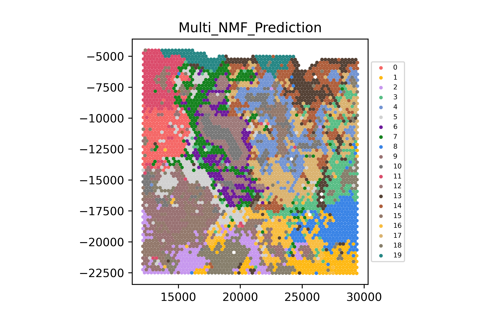

Run_multnmf_and_Visualize
Step 1: Run MultiNMF in MATLAB
Use the morphology‐augmented expression file visium_1142243F_norm_expr_morpho.mat as input to the MATLAB clustering script.
/opt/MATLAB/R2023a/bin/matlab -r "./run.m"The run.m script should load visium_1142243F_norm_expr_morpho.mat and output jan14_CID4209_norm_no_preprocessing.mat.
Step 2: Visualize Clusters and Probabilities
Now take the output file jan14_CID4209_norm_no_preprocessing.mat and run the Python visualization script:
python3 plot_hist_2.py jan14_CID4209_norm_no_preprocessing.matThis generates two PNGs:
pred.png— Cluster label overlayCellwise Probability Value per Kth Group.png— Cellwise probability map
Results
